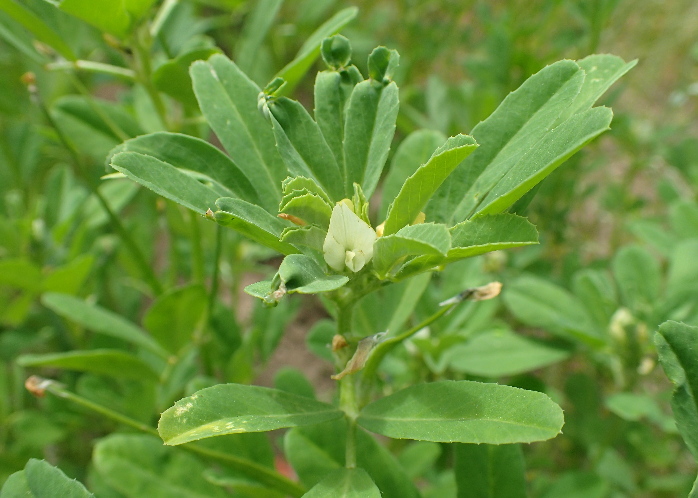

Trigonella foenum-graecum
| common name | fenugreek | |
| en español | fenogreco | |
| name in Āyurveda | methi (मेथि), methikā (मेथिका) | |
| name in TCM | hú lú bā (胡芦巴) | |
| plant family | Fabaceae (legume/pea/bean) | |
| parts used | dried seeds |
 from Wikimedia Commons by Krzysztof Ziarnek, Kenraiz - Eigenes Werk, CC BY-SA 4.0
{kind=link}
observations/description
dried seeds
- small, angular, caramel-colored seeds
- bright, full aroma very reminiscent of maple
"Fenugreek", Wikipedia
- annual plant with leaves consisting of three small obovate to oblong leaflets
distribution/conservation status
"Fenugreek", Wikipedia
- cultivated worldwide as a semiarid crop
- believed to have been brought into cultivation in the Near East
- currently India is a main producer of fenugreek
primary actions
The Yoga of Herbs, p. 118
- stimulant, tonic, expectorant, rejuvenative, aphrodisiac, diuretic, galactagogue
The Modern Herbal Dispensatory, p. 231-2
- antidiabetic, decongestant, galactagogue
The New Age Herbalist, p. 93, 96
- aphrodisiac, galactagogue, nutritive tonic, anti-inflammatory
system affinities
reproductive, endocrine
energetics
The Yoga of Herbs, p. 118
- reduces vāta, kapha; increases pitta
- bitter/pungent/sweet taste - pungent post-digestive effect
- heating
The Modern Herbal Dispensatory, p. 231-2
- warming, drying
primary uses
The Yoga of Herbs, p. 118
- good herbal food for convalescence and debility, especially of the nervous, respiratory, or reproductive systems
- indicated for chronic cough, allergies, bronchitis, influenza, neurasthenia, sciatica, arthritis
- increaes milk flow and hair growth
- seed paste can be used externally for boils, ulcers, and hard to heal sores
- with valerian as a nerve tonic
- added to food to aid digestion
- indicated for dysentery and dyspepsia
- the sprouts are a vegetable remedy for indigestion, hypo-function of the liver, and seminal debility
- powdered seeds taken with milk as a tonic
The New Age Herbalist, p. 93, 96
- therapeutic possibilities thanks to the steroidal saponins, which closely resemble human sex hormones
- folk reputation as an aphrodisiac and galactagogue
- recommended for impotence in men and menopausal sweating and depression in TCM
- useful source of vitamins and minerals
- soothing remedy for bronchitis
- powedered seeds can be used as a poultice for rhematic pains or boils that benefit from fenugreek's drawing power
The Modern Herbal Dispensatory, p. 231-2
- encourages weight gain and is helpful for strengthening the body during convalescence
- helps balance blood sugar and may be helpful for diabetes
- enriches breast milk
- soothing remedy for ulcers, burns, abscesses, other injuries
- with thyme to decongest the sinuses
witchcraft
extra information
The New Age Herbalist, p. 93, 96
- previously listed under family Papilionaceae (now entirely moved under Fabaceae)
pharmacology
The New Age Herbalist, p. 93, 96
- alkaloids (trigonelline, choline, gentianine, carpaine), steroidal saponins (mainly diosgenin), flavonoids, oils (up to 8%), mucilage (up to 30%), protein (up to 20%), vitamin A, vitamin B, vitamin C, calcium, iron, other minerals
contraindications/pharmaceutical interactions/warnings
The Yoga of Herbs, p. 118
- pregnancy (promotes vaginal bleeding, may cause abortion), high pitta
The New Age Herbalist, p. 93, 96
- has a stimulating effect on the uterus and should not be used medicinally during pregnancy
The Modern Herbal Dispensatory, p. 231-2
- not recommended for use during pregnancy
preparations
The Modern Herbal Dispensatory, p. 231-2
- weak decoction
- dried seeds, 15 g: 1 L, covered
- tincture
- dried seeds, 1:3, 70% alcohol, 10% glycerin
- poultice
The Yoga of Herbs, p. 78, 118
- decoction
- dried seeds, 1:16, reduce to 1/4 original amount
- powder
- paste
- gruel
dosage
The Modern Herbal Dispensatory, p. 231-2
- weak decoction: 4-8 oz, 3/day
- tincture: 1-3 mL, 3/day
The Yoga of Herbs, p. 92, 118
- decoction: 2 oz, 3/day
- powder: 250-1000 mg, 3/day
personal experiences/simples
decoction (7 g: 12 oz, 20 minutes), dried seeds
- rich golden yellow color, slightly cloudy/opaque
- aroma has become much earthier and more savory, remisicent of chicken buoillon
- full body, sweet and savory up front, bitter on the back end
- slight soapiness in the mouth after
recipes
sources
Easely, Thomas and Steven Horne. The Modern Herbal Dispensatory (2016)
"Fenugreek" on Wikipedia. Retrieved 14 August 2025.
Frawley, David and Vasant Lad. The Yoga of Herbs: An Ayurvedic Guide to Herbal Medicine (1986)
Goldberg Blackthorn, Samantha. Ace of Cups Herbal Medicine and Botanical Magic Herbal School (2024)
Mabey, Richard et al. The New Age Herbalist (1988)